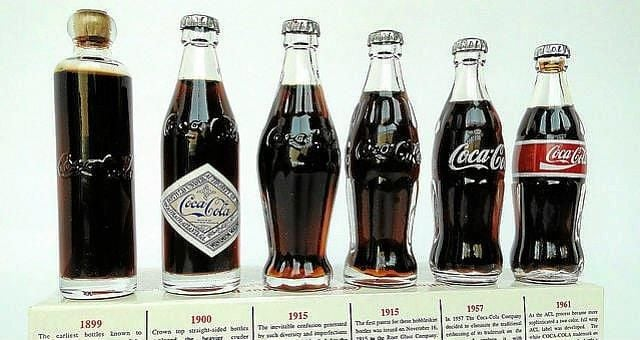
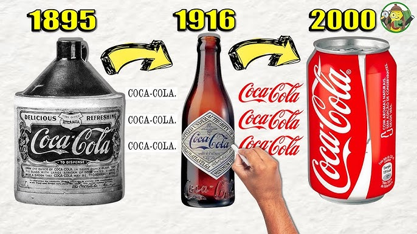

Nosotros
Historia
Coca‑Cola nació en 1886 en Atlanta, EE.UU., como una bebida creada por el farmacéutico John S. Pemberton. Desde entonces evolucionó hasta convertirse en una de las marcas más reconocidas del mundo.
El origen de Coca‑Cola. El 8 de mayo de 1886, el Dr. John Pemberton llevó su jarabe perfeccionado a la farmacia Jacobs en el centro de Atlanta, donde se vertió el primer vaso de Coca‑Cola. Coca‑Cola, que sirvió alrededor de nueve bebidas por día en su primer año, fue una bebida nueva y emocionante al principio.
Década de 1900 "La bebida más refrescante del mundo” En 1904 aparece por primera vez publicidad de Coca‑Cola en revistas de tirada nacional en Estados Unidos.Se abren plantas de embotellado en Canadá, Cuba y Panamá, convirtiéndose en los tres primeros países en embotellar Coca‑Cola fuera de Estados Unidos.
Historia de Coca-Cola en el Año (2000) fue un período significativo para The Coca-Cola Company, marcado por eventos importantes en diversas áreas. Aspectos Legales y Sociales Se llegó a un acuerdo de $192 millones en un caso de discriminación racial corporativa, el mayor de su tipo hasta ese momento. Aunque se negaron las acusaciones, se implementaron cambios sustanciales en las políticas y procedimientos de personal.
Misión, Visión y Valores
Misión
Refrescar al mundo, inspirar momentos de optimismo y felicidad, y crear valor.
Visión
Ser una empresa total de bebidas, sostenible y centrada en el consumidor, presente en cada momento.
Valores
Liderazgo, colaboración, integridad, responsabilidad, pasión, diversidad y calidad.